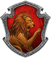
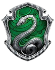
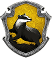
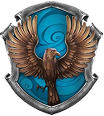

Conhecida por poucos, acessada por menos ainda: a escola da magia apareceu pela primeira vez em ‘Harry Potter e a Pedra Filosofal’. Harry recebeu um convite, diretamente da localidade em questão, por uma coruja branca, na casa de seus tios, a qual carregava consigo a carta de entrada à Hogwarts. Para acessá-la, o protagonista, com a bagagem pronta e os pré-requisitos concluídos, deveria ir à Estação King’s Cross, em Londres, onde fica a plataforma 9³/4 e pegar o trem para o local. E por mais incrível que pareça, essa plataforma só ficava disponível ao atravessar uma parede...
As Casas
Fatalmente uma das coisas mais marcantes e excitantes nesse universo lindo e maravilhoso é a presença das casas de Hogwarts. Apesar de todo mundo já conhecê-las, merecem pelo menos uma breve explicação.
Coragem, bravura e lealdade
Seus membros são conhecidos por serem destemidos e determinados, sempre prontos para defender o que é certo.
Ambição, astúcia e determinação
Essa casa valoriza estudantes que são inteligentes, estratégicos e estão dispostos a fazer o que for necessário para alcançar seus objetivos.
Paciência, dedicação e respeito
Estudantes honestos, pacientes e que tratam todos igualmente. Essa casa valoriza o trabalho, a confiança e a ajuda aos próximos.
Paciência, dedicação e respeito
Sabedoria, criatividade e curiosidade são marcantes nessa casa. Conhecidos pelo seu raciocínio e amor pelo conhecimento.
O Uniforme
O uniforme de Hogwarts: a roupa que os frequentadores da Escola da Magia precisam usar.
O manto, o cochecol, as botas, os livros de feitiço e o emblema, tudo de acordo com a sua casa...
No Salão Principal, na Sala Comum, na Bibloteca ou no Salão de Estudos, usados, sobretudo, nas áreas públicas do castelo.
As Varinhas
As varinhas, ferramentas mágicas utilizadas pelos feiticeiros de Hogwarts: encantar, atacar, amaldiçoar... tudo que você possa imaginar.
Feitas e vendidas pelos fabricantes de varinhas, eram vendidas aos alunos e transeuntes no Beco Diagonal.
Construídas em madeira a partir de um núcleo: pena de Fênix, pelo de Unicórnio ou fibra de coração de dragão.
O Quadribol
Quadribol: o esporte mais popular do mundo mágico. Realizado no ar, em cima das vassouras dos feiticeiros.
Composto por dois times de sete jogadores, os objetivos são pontuar gols ou conseguir pegar o pomo dourado, que é a função do apanhador.
Seu campo é oval , e é possível marcar gols, nos três aros, com as goles (bolas voadoras): são os famosos artilheiros.
Contém 4 bolas de 3 tipos: uma goles (vale 10 pontos), dois balaços (atinge aleatoriamente os jogadores) e o pomo dourado (vale 150 pontos).
Um goleiro, três artilheiros (marcam pontos com as goles), dois batedores (rebatem os balaços) e um apanhador (pomo dourado).